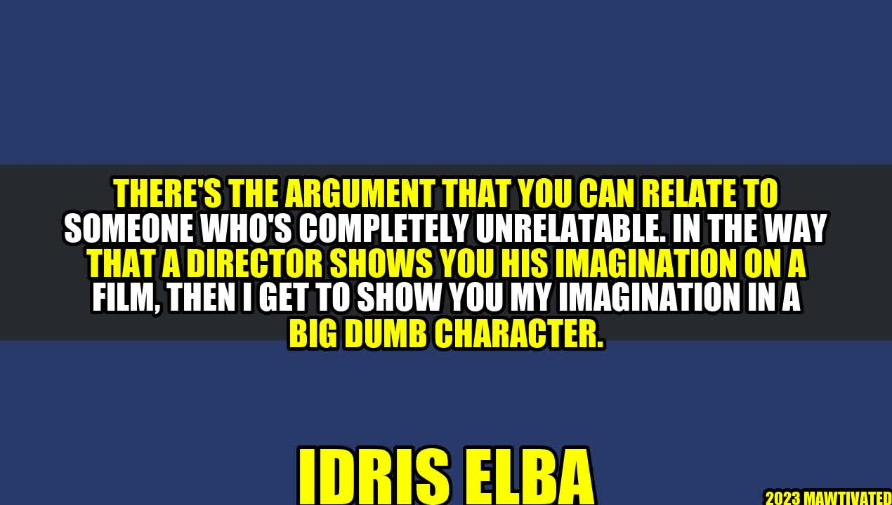

The Art of Portraying Unrelatable Characters
An Inspiring Story
Imagine being a young actor, struggling to make a name in the industry. You audition for various roles, but always end up being rejected as you don't fit the typical Hollywood mold. You start doubting your abilities and wonder if you will ever get a chance to showcase your talent.
But then one day, you get a call from a director who sees something in you that others have missed. He offers you a role that seems impossible to portray - a character that is completely unrelatable to you. You are hesitant at first, but the director encourages you to push your boundaries and take on the challenge. You accept the role, and through your performance, you prove to yourself and everyone else that art has no boundaries.
Author - Idris Elba Story or Background
Idris Elba is an actor who has been pushing boundaries since the beginning of his career. He grew up in London, England, and started acting in school plays. He later worked odd jobs to support himself while pursuing his passion for acting.
Elba's breakthrough role came in the HBO series The Wire, where he played a character completely different from himself - a tough Baltimore drug dealer. He went on to portray many other unrelatable characters, such as Nelson Mandela, a Norse god, and a Pacific Rim commander.
Why Portraying Unrelatable Characters is Important
- It pushes actors out of their comfort zone and enhances their skills
- It allows viewers to see different perspectives and experiences
- It promotes diversity and representation in the entertainment industry
- It stimulates creativity and imagination
- It challenges societal norms and stereotypes
Examples of Unrelatable Characters Portrayed Well
Aside from Idris Elba, many other actors have successfully portrayed unrelatable characters:
- Robert Downey Jr. as Iron Man
- Eddie Redmayne as Stephen Hawking
- Natalie Portman as Jackie Kennedy
- Daniel Day-Lewis as Abraham Lincoln
- Gary Oldman as Winston Churchill
Conclusion
Portraying unrelatable characters is a challenging yet rewarding experience for actors and viewers alike. It promotes diversity, creativity, and acceptance of different perspectives. To succeed in portraying such characters, actors need to push their boundaries and embrace the unknown.
3 Practical Tips for Portraying Unrelatable Characters:
- Do extensive research about the character's background and experiences
- Connect with the character's emotions and motivations
- Take risks and don't be afraid to make mistakes
Curated by Team Akash.Mittal.Blog
Share on Twitter Share on LinkedIn